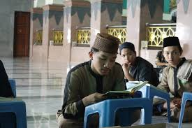

program unggulan

PONDOK PESANTREN TAHFIZH
Pondok Pesantren Tahfizh Qur’an At-Taqwa adalah model pendidikan yang menerapkan kurikulum terpadu antara Tahfizh al-Qur’an, materi kepesantrenan dan sekolah formal tingkat SMPIT/SMAIT.
a. Program 30 Juz Tingkat SMPIT / SMAIT b. Program 30 Juz 1 Tahun

FOR KIDS
Program Tahfizh For Kids adalah program belajar membaca dan menghafal Al-Qur’an untuk anak-anak usia 3 s/d 12 tahun.

TAHSIN TILAWAH BERSANAD
Pembinaan dalam membaca Al-Qur’an, baik dalam hal makharijul huruf, kaidah tajwid, maupun tartilnya. Bagi peserta yang sudah menyelesaikan program ini akan memperoleh sanad silsilah bacaan Al-Qur’an yang sampai kepada Nabi Muhammad SAW.